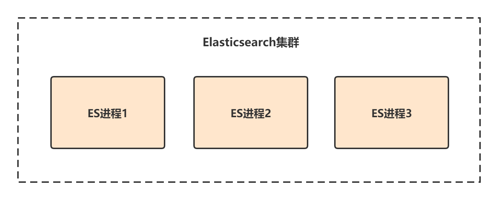
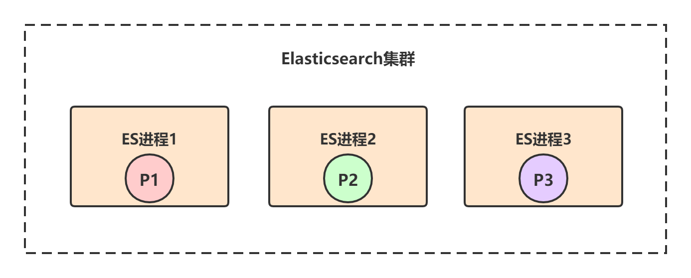
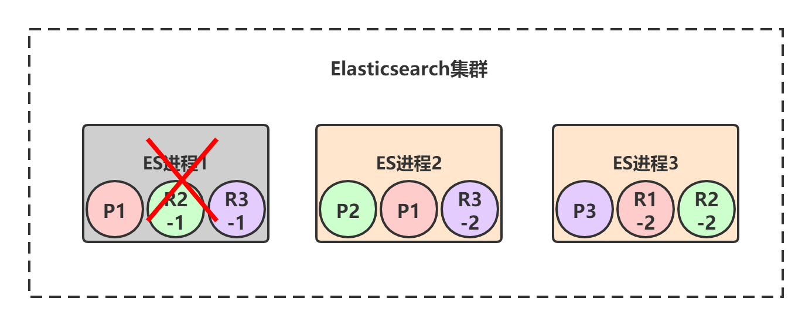
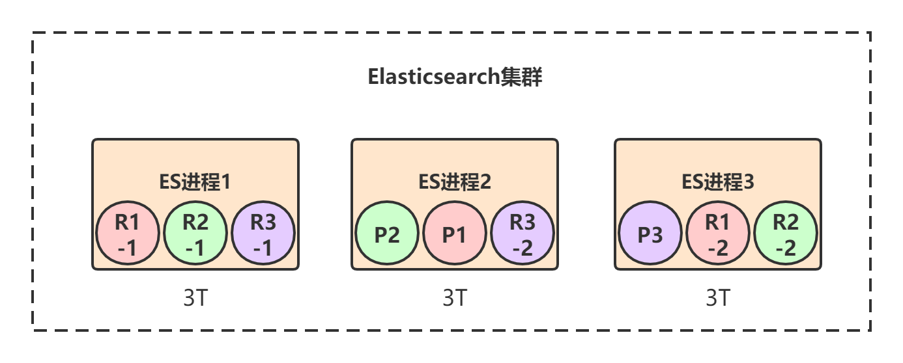
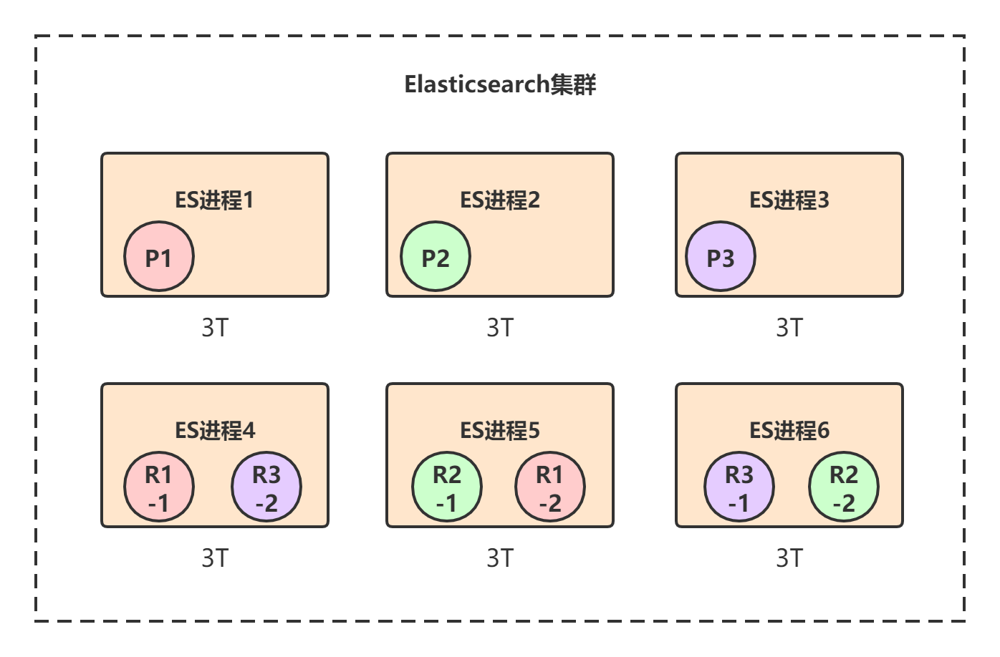
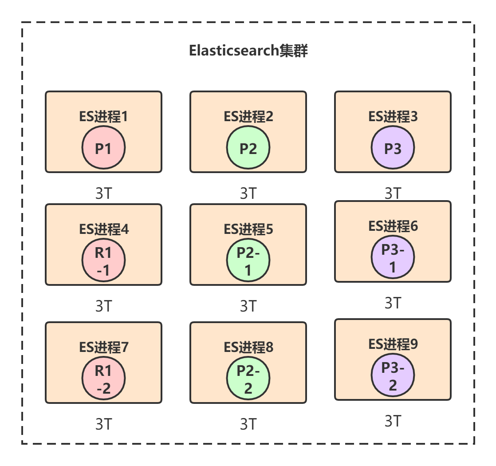

Elasticsearch基础（四）——Elasticsearch架构
本章，我将从分布式系统的几个核心要点去讲解Elasticsearch的基本架构。通过本章的学习，我们会看到，分布式框架的很多架构设计理念都是相通的，无外乎就是围绕着高可用、可扩展、高性能、数据一致性这四方面展开的。
一、基本架构
1.1 进程节点
我们在生产环境部署Elasticsearch时，都是一台机器上启动一个Elasticsearch进程实例，比如我们有三台机器，那么三个ES进程实例就构成了一个ES集群，每个实例我们把它叫做一个节点：

1.2 负载均衡
当我们建立Index索引时，必须指定索引有几个primary shard，以及primary shard的replica shard数量。
比如，创建一个名称为test_index的索引，共有3个primary shard，每个primary shard都有2个replica shard，那总共就是9个shard：
PUT /test_index
{
"settings" : {
"number_of_shards" : 3,
"number_of_replicas" : 2
}
}
test_index索引的数据会被均匀分布到3个primary shard——P1、P2、P3上，而3个primary shard又会被负载均衡到ES节点上。我们现在有三个ES进程节点，那么primary shard的分布就是类似下面这样的，每个ES节点上分布1个primary shard：

每个primary shard都有一个replica shard，replica shard其实就是个数据备份，类似于msater/slave模式中的slave节点。所以6个replica shard也会被负载均衡到各个ES进程节点上，最终的shard分布可能是下面这样的：

上图中，颜色相同的代表一个primary shard和它的所有replica shard，比如对于P1这个primary shard，它有两个replica shard：R1-1和R1-2。
Elasticsearch有一个原则：primary shard和它对应的replica shard不能全部署在同一个节点上，否则节点挂了的话，数据和拷贝都会丢失。
二、高可用
Elasticsearch保证集群高可用的方式和大多数分布式框架类似，就是采用主从模式+选举的方式。每个primary shard都有其所属的replica shard作为副本，如果primary shard挂了，就会从所有replica shard中选举出一个新的Leader作为primary shard。
我们以下图的部署来具体看下Elasticsearch是如何保证集群的高可用的：
初始情况下，三个ES进程节点都正常运行，此时集群的状态就是green，也就是完全正常状态。
假设ES进程1节点宕机了，我们来看下整个集群的可用性：

上图中，节点1宕机了，所以对于P1这个primary shard，就是非active状态，此时集群状态转为red。但是节点2和节点3上仍然保存着完整的数据，就算再挂掉一个节点，只剩下一个节点2或节点3，整个集群也还是可用的。
当集群状态变为red后，P1的两个副本——R1-1和R1-2就会开始一轮选举，胜出者成为新的primary shard，比如我们假设R1-1胜出：

选举完成后，test_index索引的三个primary shard都是存活的，但是P1只有一个repilca shard是active状态，所以此时集群的状态变成yellow。
最后，当宕机的那个节点1恢复后，上面的shard又会重新加入到集群中，原来的P1发现节点2上已经有了新的primary shard，自己就会变成repilca shard，并进行数据同步：

三、可扩展
Elasticsearch实现水平扩展的方式就是数据分散集群模式，也就是数据分片。
一个索引的数据会被均匀分布到它的primary shard中，比如test_index索引一共有3T的数据，那么每个primary shard就有1T数据。replica shard是primary shard的副本，所以也包含1T数据，此时集群的情况可能是下面这样的：

如果每个ES节点的磁盘容量总共也就3T多怎么办？此时所有节点的磁盘都几乎撑满了。
Elasticsearch可以透明的实现节点水平扩展，只要再找台机器，启动一个Elasticsearch进程，将其加入到当前集群中，那么上面的shard重新在节点上自动均匀分布。比如我们再加三台机器：

通过这种方式，最多可以加到9台机器，刚好对应9个shard：

四、总结
本章，我们对Elasticsearch的基本架构进行了讲解，后续章节深入其底层实现细节。